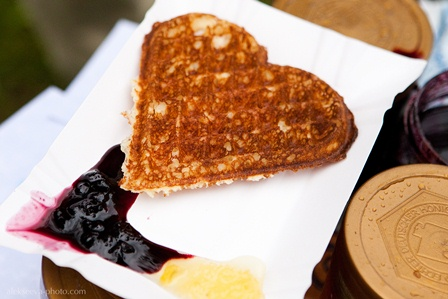

|
Международный праздник
|
|||||||||
|
Спонсор мероприятия АО «150 авиационный ремонтный завод» холдинга Вертолёты России.
|
|||||||||
|
"Соседи"-2018
|
|||||||||
|
 |
|||||||||
|
25 августа в посёлке Краснолесье состоится добрый деревенский праздник, который объединяет людей разных национальностей, разных культур,
живущих на единой прекрасной земле. Приглашаем всех в гости!!! |
|||||||||
|
ПРОГРАММА
Международный праздник "СОСЕДИ"- 2018 |
|||||||||
|
Фото: Юлия Алексеева
|
|||||||||
Мы приглашаем всех влюблённых в Роминтскую пущу и тех, кто захочет побывать в нашем краю виштынецких холмов впервые! Приглашаем вас на праздник гостеприимства и тёплого дружеского общения, праздник, когда местные жители готовы поделиться своими знаниями и умениями, а гости - своими чувствами, окунувшись в атмосферу лесной деревни. Здесь на самом юго-востоке Калининградской области сходятся границы трёх государств: России, Литвы и Польши. Здесь рады всем гостям, всем соседям, всем, кто готов радоваться вместе.
Вас ждёт деревенский праздник с ярмаркой и угощениями, мастер-классами и концертом, играми, познавательными путешествиями и дружескими посиделками! Для всех, независимо от возраста, для детей и взрослых найдётся занятие по душе. Начало праздника в 12 часов на территории Виштынецкого экомузея: посёлок Краснолесье, улица Школьная-5а.
Праздник организует Калининградское региональное общественное учреждение «Виштынецкий эколого-исторический музей» совместно с Краснолесенским домом культуры и библиотекой при партнёрской поддержке Регионального природного парка «Виштынецкий» и Отдела культуры Администрации Нестеровского района. Праздник поддерживают региональный природный парк «Виштынецкий» (Литва) и ландшафтный парк «Пущи Роминской» (Польша), Калининградское региональное отделение Союза театральных деятелей России, Союз "Антропос Калининград", Союз "Anthropos e.V." (Германия), творческие люди и коллективы Калининградской области, общественные организации из приграничных районов Литвы и Польши.
Спонсор праздника "Соседи" - 2018 АО "150 авиационный ремонтный завод" холдинга Вертолёты России
По всем вопросам проведения праздника
и участия в нём обращаться:
тел.: +7-906-212-68-23, Алексей Соколов
эл. почта: wystynez@bk.ru
и участия в нём обращаться:
тел.: +7-906-212-68-23, Алексей Соколов
эл. почта: wystynez@bk.ru


25 августа 2018, суббота
12:00 Торжественное открытие праздника (Виштынецкий экомузей)
12:30 Открытие фотовыставки «Роминта. Музыка леса» автор Юлия Алексеева (выставочный зал музея)
12:00 – 17:00 Ярмарка и угощения от местных жителей (территория музея)
12:00 – 17:00 Работа открытых мастерских (территория музея)
12:00 Торжественное открытие праздника (Виштынецкий экомузей)
12:30 Открытие фотовыставки «Роминта. Музыка леса» автор Юлия Алексеева (выставочный зал музея)
12:00 – 17:00 Ярмарка и угощения от местных жителей (территория музея)
12:00 – 17:00 Работа открытых мастерских (территория музея)
Мастерская семьи Ждановых: Резьба по дереву, плетение и ткачество
Мастер-класс «Лесной талисман» Елены Уфимцевой
Мастерская по коже Людмилы Алексеевны Кочуковой
Рисовальная поляна «Тайны Красного леса», Светлана Довженко, Союз «Антропос
Калининград»
Мастерская семьи Тюриных по текстилю и коже
Мастерская «Безделушки от домовушки» Надежды Фёдоровой
Мастерская по лепке из глины с Ольгой Васильевой
Мастерская по лепке из глины с Владасом Лукошевичусом
Мастер-класс «Аппликация из природных материалов» с Хенриком Базылевичем
12:00 – 17:00 Знакомство с лошадьми и конные прогулки по Краснолесью и окрестностям с Людмилой Петренко
13:00 до 15:00 Концерт фольклорных коллективов на сцене Виштынецкого экомузея
Ансамбль «Подруги», пос. Гаврилово, руководитель Светлана Никирина
Ансамбль «Польска», Местная польская национально-культурная автономия «Полония»,
г. Калининград
Ансамбль «Тильзита», литовское общество "Беруте", г. Советск,
руководитель Евгения Юцене
Клуб украинской песни «Свитанок», г. Гвардейск, руководитель Владислав Лысый
Карина Котович, пос. Краснолесье
Народный ансамбль белорусской песни «Крыница», Озерковский СДК,
Гвардейский городской округ, руководитель Светлана Гросу
Фольклорный ансамбль "Молвинец", МАУ ДК "Машиностроитель",
руководитель М.В. Макарова, Калининград
Хор «Забавушка», Гавриловская средняя школа им Г. Крысанова,
худ. руководитель Светлана Никирина
С 15:00 начинаются мероприятия, проходящие на разных площадках.
Вы можете выбрать то, которое вам более по душе.
Вы можете выбрать то, которое вам более по душе.
15:00-18:00 Концертная программа творческой мастерской
«Поющие поколения», организатор Ирина Ковардо (Краснолесенский Дом культуры) и Юрген Ляйсте (Союз "Anthropos e.V.", Германия)
(площадка дома культуры)
«Поющие поколения», организатор Ирина Ковардо (Краснолесенский Дом культуры) и Юрген Ляйсте (Союз "Anthropos e.V.", Германия)
(площадка дома культуры)
15:00-17:00 Программа для детей от Калининградского регионального отделения Союза театральных деятелей России (территория музея)
Интерактивная программа для детей, коллектив театра «Дель» при Доме актера Калининградского регионального отделения Союза театральных деятелей РФ, руководитель Татьяна Слещенкова
Кукольное представление для детей и взрослых "Ищи и найдешь. Сказка о том, как волк искал себе друзей." по мотивам абхазских сказок. Актёры Калининградского областного театра кукол Елена Кечамасова, Наталья Кондракова, Нина Удалова
16:00 Музыкальный подарок «Что такое доброта», семейный коллектив «Бабушкина кукла», руководитель Надежда Фёдорова
(сцена Виштынецкого экомузея)
15:30-18:30 Лесное путешествие с сотрудниками природного парка «Виштынецкий» к горе Дозор и озеру Мариново
(запись участников путешествия с 12:00 до 15:00 в инфокиоске природного парка «Виштынецкий» на территории музея)
(запись участников путешествия с 12:00 до 15:00 в инфокиоске природного парка «Виштынецкий» на территории музея)
16:00-17:00 Литературная гостиная «В краю берёзовых закатов и лебединых облаков», Краснолесенская сельская библиотека и женский клуб «Ностальгия» приглашают в гости. За чашкой душистого чая вас ждут стихи о Краснолесье и родной природе, легенды об озере Виштынецком и Роминтской пуще (библиотека посёлка Краснолесье)
16:00-18:00 Познавательное путешествие по окрестностям посёлка Краснолесье к родникам в истоки реки Синей с Александром Дорошкиным (сбор участников у информационной палатки у ворот музея)
18:00 – 19:00 «Споёмте, друзья!», неформальное общение артистов и почитателей их творчества (территория музея)
19:00 – 21:00 Роминтский стол с Александром Самсонкиным.
Собираться на общий праздник всем двором или деревней – давняя традиция. Роминтский стол – это дружеские посиделки всем миром, когда каждый приносит к столу своё угощение. Участником может стать любой желающий. (территория музея)
26 августа 2018, воскресенье
8:00 – 12:00 Прогулка в лес с проводником за утренними впечатлениями
(сбор участников около музея)